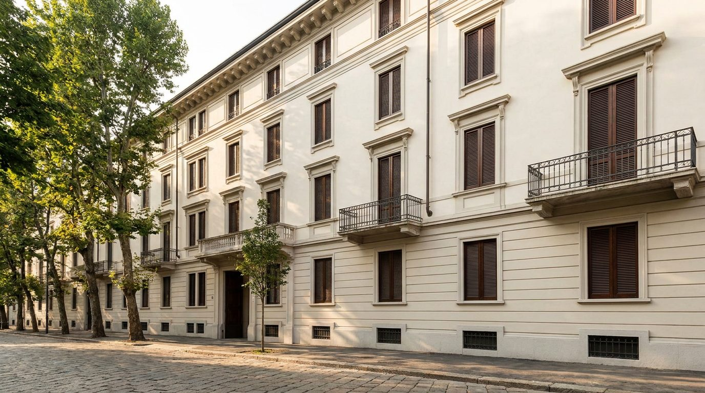
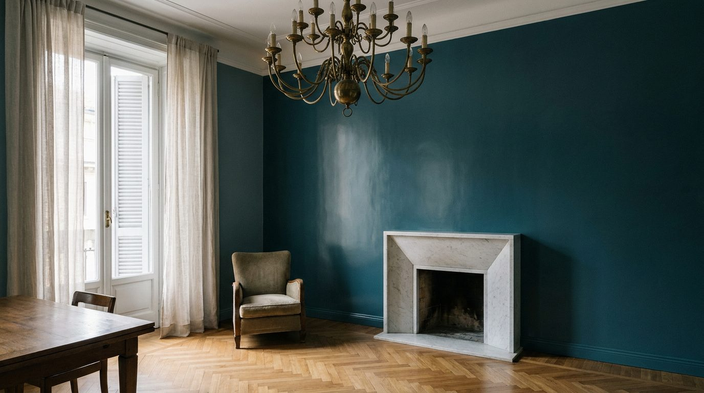

Atlante · IT-05 · Italia · Nord
Appartamento milanese d'autore anni '30
Esempi · esterno e interno


Architettura · elementi riproducibili
- 20-35 mq per ambiente, altezza 3,1-3,4 m
- parquet a spina di pesce
- infissi a due ante con persiane interne
- caminetto in marmo
- boiserie bassa
- specchiera sopra la consolle
- lampadario a bracci
- pareti a tinta piena con cornice a gola.
È la tipologia più economica da generare e la più credibile per un catalogo arredo: scala domestica, non scenografica.
Luce
doppia esposizione cortile/strada, finestre a est, luce mattutina morbida e obliqua; tende leggere che diffondono.
Prompt di generazione (EN)
1930s Milanese bourgeois apartment, 3.3 m ceiling, petrol-blue lacquered wall behind the bed, herringbone oak floor, marble fireplace, brass chandelier, tall shuttered windows with morning light from the left diffused by linen curtains, 35 mm, warm-neutral grade with one saturated wall.
Riferimenti reali
- Casa Museo Boschi Di Stefano, Milano apri ↗